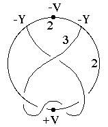
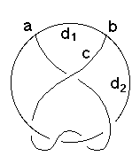

212
212
 214
214 Orbifold Atlas Home Page
Orbifold Atlas Home Page
 Crystallographic Topology Home Page
Crystallographic Topology Home Page
Underlying Topological Space: S3; Figure Pseudo-Symmetry (FPS): 2
Euclidean 3-Orbifold with Invariant-Lattice-Complex Letters
(left), Wyckoff Site Letters (right)
 
| FPS | Mult | Lattice Comp | Group Graph | Wyckoff Set | 2[4]Cover |
| 4-2 | -Y | 322 | a, b | ||
| 8-1 | -Y2[D,+Y*,D]-Y2 | 22<3>22 | c:a-b | ||
| 12-1 | -Y3[-V]-Y3 | 32<2>32 | d1:a-b | ||
| 12-1 | -Y3[+V]-Y3 | 32<2>32 | d2:b-a | ||
| 24 | 1 | e:cd | |||
| 2 | 24-1 | +V[S*]-V | 2*=22<1>22 | e1:d1-d2 | #214(g) |
212
214
Orbifold Atlas Home Page
Crystallographic Topology Home Page
Page last revised: